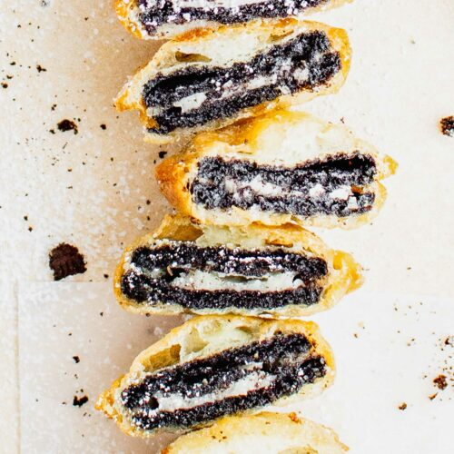

Deep-Fried Oreos

Deep-fried Oreos are a carnival favorite where I grew up. Oreos get dipped into pancake batter and fried — yummy!
It couldn't be simpler to make deep-fried Oreos at home: Make the batter, dip the cookies in the batter, and fry the cookies in batches until they're golden brown. Dust the finished Oreos with powdered sugar for a perfect presentation.
Ingredients:
- 2 quarts vegetable oil for frying
- 1 cup milk
- 1 large egg
- 2 teaspoons vegetable oil
- 1 cup pancake mix
- 1 (18 ounce) package cream-filled chocolate sandwich cookies (such as Oreo)
Steps:
- Heat oil in a deep fryer or large saucepan to 375 degrees F (190 degrees C).
- Whisk milk, egg, and 2 teaspoons of vegetable oil in a large bowl until smooth. Stir in the pancake mix until no dry lumps remain.
- Dip cookies into batter, one at a time, and carefully place into hot oil. Fry in batches, 4 or 5 at a time, until cookies are golden brown, about 2 minutes. Drain on a paper towel-lined plate before serving.
Back to Home